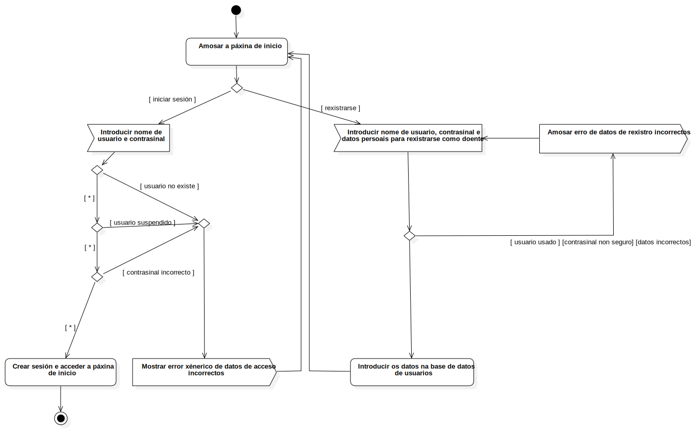

Acceso á aplicación
UMLActivity
ESaude
::
Use Case Model
::
Acceso á aplicación
Description
none
Diagrams

Acceder á aplicación
Nodes
Inicio
Amosar a páxina de inicio
Está o usuario rexistrado
Introducir nome de usuario e contrasinal
Introducir nome de usuario, contrasinal e datos persoais para rexistrarse como doente
Crear sesión e acceder a páxina de inicio
Introducir os datos na base de datos de usuarios
ActivityFinalNode1
Mostrar error xénerico de datos de acceso incorrectos
DecisionNode1
DecisionNode2
DecisionNode3
MergeNode1
Nome de usuario xa existe
Contrasinal non é seguro
Datos persoais non son válidos
DecisionNode4
DecisionNode5
DecisionNode6
Amosar erro de datos de rexistro incorrectos
Edges
(Inicio→Amosar a páxina de inicio)
(Amosar a páxina de inicio→Está o usuario rexistrado)
[ iniciar sesión ] (Está o usuario rexistrado→Introducir nome de usuario e contrasinal)
[ rexistrarse ] (Está o usuario rexistrado→Introducir nome de usuario, contrasinal e datos persoais para rexistrarse como doente)
(Crear sesión e acceder a páxina de inicio→ActivityFinalNode1)
(Introducir nome de usuario e contrasinal→DecisionNode1)
[ * ] (DecisionNode1→DecisionNode2)
[ usuario no existe ] (DecisionNode1→MergeNode1)
[ * ] (DecisionNode2→DecisionNode3)
[ usuario suspendido ] (DecisionNode2→MergeNode1)
[ * ] (DecisionNode3→Crear sesión e acceder a páxina de inicio)
[ contrasinal incorrecto ] (DecisionNode3→MergeNode1)
(MergeNode1→Mostrar error xénerico de datos de acceso incorrectos)
(Introducir nome de usuario, contrasinal e datos persoais para rexistrarse como doente→DecisionNode4)
[ * ] (DecisionNode4→DecisionNode5)
[ usuario usado ] [contrasinal non seguro] [datos incorrectos] (DecisionNode4→Amosar erro de datos de rexistro incorrectos)
[ * ] (DecisionNode5→DecisionNode6)
[ * ] (DecisionNode6→Introducir os datos na base de datos de usuarios)
(Mostrar error xénerico de datos de acceso incorrectos→Amosar a páxina de inicio)
(Amosar erro de datos de rexistro incorrectos→Introducir nome de usuario, contrasinal e datos persoais para rexistrarse como doente)
(Introducir os datos na base de datos de usuarios→Amosar a páxina de inicio)
(DecisionNode4→Introducir os datos na base de datos de usuarios)
Properties
Name
Value
name
Acceso á aplicación
stereotype
null
visibility
public
isReentrant
true
isReadOnly
false
isSingleExecution
false
Owned Elements
Acceder á aplicación